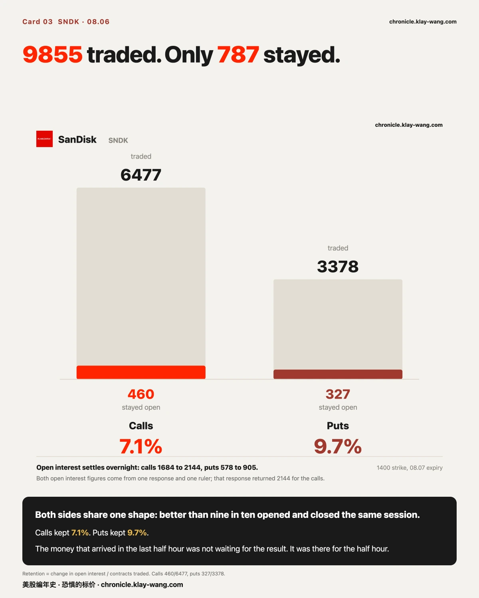
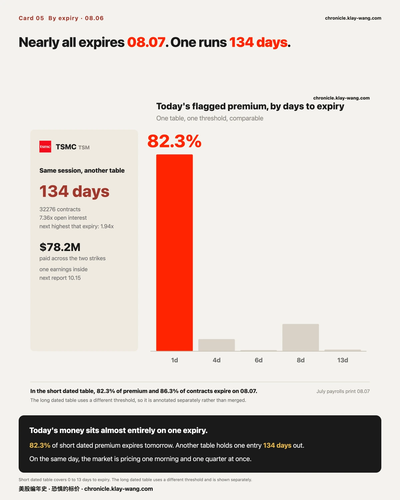

13.69 亿美元，全押在周五上午的一个数字上· 08-06 · 8.3-8.7
闪迪 08.05 盘后交卷，08.06 收 1258.58（−6.81%）。08.04 与 08.05 两次冻结的事前带，都兜住了这个结果：距 08.04 那条带的下沿 39.03 美元，距 08.05 那条 48.86 美元。
08.07 出非农。今天过线的钱里，82.3% 押在 08.07 到期的合约上；而 VIX 现货从 15.81 降到 15.15，曲线反而更陡了（远近价差 28.23% 到 30.74%）。
这份数据是用来换一个角度的
看 K 线，你只能问它涨了还是跌了。而期权是有价钱的意见：有人在某个价位付了一笔钱，
这笔钱只有在某个条件成立时才有回报，条件写在合约上，谁都能查。
所以本期每一节都只回答两件事：谁在什么价位付了多少钱，以及这笔钱要什么条件才算数。
方向不在其中，因为成交记录里没有方向。但条件在，而且条件 08.07 就能验。
一 · 同一批合约，两把尺子给出相反的答案

SPCX 08.06 迎来上市后第一批解禁。把 08.07 到期这一档在解禁前后两天摆在一起，
两把尺子给出的结论是相反的。
按权利金算，钱几乎全从看跌一侧撤走了。 08.05 看跌侧 2.6221 亿美元、看涨侧 7042 万，
看跌占 78.83%；08.06 反过来，看跌 4325 万、看涨 1.1939 亿，看跌只剩 26.59%。
五十二个百分点。
按张数算，什么都没发生。 08.05 看跌 660527 张、看涨 515692 张，看跌占 56.16%；
08.06 看跌 502245 张、看涨 390910 张，看跌占 56.23%。差 0.08 个百分点。
差别不在市场，在计价方式。这一列的权利金是张数乘以当天收盘价再乘一百。
SPCX 08.05 跌 13.61%，看跌合约那天贵；08.06 涨 6.14%，看涨合约今天贵。
同一批张数，用哪天的价去乘，就得出哪一天的故事。
我换了三个到期窗口重算（全量、DTE≤2、DTE≤8），结论不变。所以这不是窗口挑出来的。
这件事本身比 SPCX 值钱：任何一篇说钱压在某一侧的文字，如果不告诉你它用的是金额还是张数，
那句话就是不可验的。而这两个数今天差了五十二个百分点。
解禁的事实部分
08.06 开闸的是 9.115 亿股，等于 180 天锁定块的两成。马斯克那约 64 亿股不在其中，锁到 2027.06.12。
正股 08.06 收 114.92，涨 6.14%，成交 1.507 亿股。
关于这批股票值多少钱：常被引用的那个约 1230 亿美元，是按 IPO 价 135 算的。
按 08.06 收盘 114.92 算约 1047 亿，按 08.05 收盘 108.27 算约 987 亿。
三个数差两成半，报金额不报基准就不是事实。
解禁不改变一家公司值多少钱，它改变的是有多少人能在同一天改变主意。
这批钱要什么条件才算数：这些合约 08.07 收盘就到期，还剩一个交易日。
看跌那一侧集中在 100 到 125，看涨集中在 110 到 120，正股收在 114.92。
也就是说，绝大多数合约的回报，取决于 08.07 收盘穿不穿过这几个价位。
一天之内，没有第二次机会，也没有拿住等等看这个选项。
二 · 开奖：两条事前带都兜住了

闪迪 08.05 盘后交卷，当季超预期、下一季指引低于预期。08.06 盘前一度到 1230（−8.92%），
收在 1258.58，跌 6.81%。
这个结果之前，市场为它开过两次价，两次都留了记录：
08.04 那次：基准 1425.71，隐含区间 ±184.62（±12.95%），记录带 1219.55 到 1588.79。
08.05 收盘那次：基准 1350.50，±140.78（±10.42%），记录带 1209.723 到 1491.277。
今天的收盘价落在两条带里面。 距 08.04 那条的下沿 39.03 美元，占那条带宽度的 10.6%；
距 08.05 那条的下沿 48.86 美元，占 17.4%。
值得注意的是两条带的变化方向：随着股价从 1425 跌到 1350 走进财报，
市场把带子收窄了（从 ±12.95% 到 ±10.42%），也把整条带往下挪了。
它不是一直开着同一个价在等，它每天都在改。而每次改，都留了痕。
这件事的价值不在于它今天猜对了。 事前记录之所以值钱，是因为它写下之后不能改。
今天两条带都兜住了，而如果没兜住，它们也会一模一样地留在那里。
一个只在事后才说出口的区间，无论多准，都不能算数。
三 · 08.05 那批钱，两侧都只留下不到一成

上一期挂了一个可以自己去验的数：闪迪 08.07 到期 1400 这一档，08.05 成交的那批合约，
到底是新开的仓，还是当天开当天平。未平仓量隔夜才结算，所以 08.06 就有答案。
两侧的答案都到了，而且是同一个形状：
| 08.07 到期 1400 | 08.05 成交 | 08.05 未平仓 | 08.06 未平仓 | 沉淀下来的比例 |
|---|---|---|---|---|
| 看涨 | 6477 | 1684 | 2144（+460） | 7.1% |
| 看跌 | 3378 | 578 | 905（+327） | 9.7% |
成交了 9855 张，留下来的一共 787 张。 两侧都是九成以上当天开、当天平。
所以那批赶在财报公布前最后半小时上桌的钱，绝大多数没有留到开奖。
它们不是在等结果，它们在等那半小时本身。
上一期我写过，这两条分布的形状比任何一个合计数都说明问题。今天这个数把那句话补完了：
形状说的是钱什么时候来的，沉淀率说的是它留没留下来。它没有留。
为什么这个数值得 08.05 就挂出来：成交量只告诉你当天换了多少手，
只有未平仓量的变化，能把新开的仓和旧仓换手分开。
所以它是这一节唯一不需要结果、只需要一个数就能验的东西，也是唯一一个我敢在结果出来之前先写下的。
看涨那一档今天又成交了 15831 张，收盘价从 62.00 变成 2.30，跌 96.3%。
为什么会跌成这样：这一档要有回报，正股得在 08.07 收盘时高于 1400。
08.05 收盘时它是 1350.50，差 3.7%；今天收 1258.58，差 11.2%，而只剩一个交易日。
同一份合约，条件没变，是达成条件的距离变了两倍多。 62 块钱买的那个可能性，今天标价 2 块 3。
而看跌那一档今天收在 141.59，它的内在价值是 1400 减 1258.58 等于 141.42。
时间价值只剩一毛七。 一张 08.07 到期的深度实值合约，市场已经基本上把它当股票在报价了。
口径留痕：这两个未平仓量取自同一次响应的同一把尺子（同一响应里看涨回的正是 2144 与 15831，
与我手上已有的数字逐位对上）。跨源引用数字必须标源，同源也要说清是同源。
四 · 一天之内，十七只里十五只的一年期恐惧变便宜了

财报过去，闪迪的隐含波动率塌下来，这是常识。今天值得看的是它塌到了多远。
一年期（恒定期限口径）：闪迪从 107.07 到 101.21，降 5.86，全场最大。
第二名是美光，从 81.29 到 79.00，降 2.29，而美光今天没有财报。
十七只观察标的里，十五只的一年期读数下降，只有亚马逊（+0.24）和 Meta（+0.44）上升。
三十天口径的塌陷更深：闪迪 −17.02、SPCX −9.26、美光 −8.68。
近端塌得比远端狠，说明市场认为这件事主要属于眼前，但它并没有只留在眼前。
一年期是这个刻度存在的意义所在：那是你真正买长期保险时付的那一截。
一家公司交完卷，另一家没交卷的公司，它一年后的保险也跟着便宜了 2.29。
这不是情绪传染，是同一个问题被回答掉了一部分。 闪迪塌的是自己那份不确定；
美光塌的那 2.29，是别人替它回答了存储需求这件事的一角。
所以真正的读数不在交卷那只身上，在没交卷的那几只身上。前者是已知，后者才是这份数据的用处。
五 · 非农前夜：八成的钱押在 08.07 到期的合约上

08.07 上午出七月非农。今天收盘过线的合约里：
440 条记录中有 335 条到期日是 08.07，也就是数字公布的当天。
金额上是 13.693 亿美元对全部 16.636 亿，占 82.3%；张数上占 86.3%。
金额前五：美光 3.311 亿、特斯拉 1.974 亿、英伟达 1.947 亿、SPCX 1.626 亿、闪迪 1.145 亿。
同一天的 VIX 期货曲线是另一个方向的：现货从 15.81 降到 15.15，近月也从 17.43 降到 17.10，
但远近月的价差从 28.23% 扩到 30.74%，曲线更陡了。
眼前更平静，而远处的价钱没跟着降下来。 这两件事同时成立，正是非农前夜的形状：
08.07 的那一下被单独定价了，它没有被摊进整条曲线。
而在另一张表里，同一天有一笔押到 134 天后
台积电 12.18 到期的两档，是今天长天期里最大的动作。12.18 这个到期日今天共 166951 张、94 档，
台积电两档就占了三成（52253 张）。更值得看的是它跟同一到期日上别人的对比：
| 同为 12.18 到期 | 量 ÷ 未平仓量 |
|---|---|
| 台积电 560 看涨 | 7.36 |
| 台积电 500 看涨 | 2.34 |
| 英伟达三档 | 0.16 / 0.41 / 0.18 |
| SPCX 200 看涨 | 0.66 |
同一个到期日上，别人基本是旧仓在换手，只有这两档是当天新建的。
两档合计约 7820 万美元：500 看涨 4188 万，560 看涨 3632 万。
这笔钱要什么条件才算数：台积电今天收 418.20。560 那一档要有回报，
它得在 134 天里涨到 560 以上，也就是涨 33.9%；500 那一档需要涨 19.6%。
这是写在合约上的、谁都能查的条件，不需要问任何人怎么看。
而这里出现了和本期头条一样的东西：560 那档的张数比 500 那档多 62%，
但 500 那档花的钱更多。谁买得多和谁付得多，在这里又不是同一个答案。
一个可查的事实：台积电的下一次财报在 10.15，而 12.18 这个到期日在它之后；
再下一次按惯例落在 2027 年 1 月中，官方尚未排定。
也就是说，这张到期日夹在两次财报中间，一次都不覆盖。
至于买方在押什么，成交记录不提供任何证据，本文不推。
同两档的看跌侧当天成交为零。这个到期日上的动作是单侧的。
把这一节的两头放在一起，今天的形状就完整了。 八成的钱买的是 08.07 上午的一个答案，
它 08.07 就知道对错；而这笔七千八百万买的是一段时间，要等四个半月。
而这段时间里一次财报都没有。这不代表我们知道它在押什么，只代表有一种解释被排除掉了。
成交记录能做到的，从来不是告诉你谁想干什么，是替你划掉几种它不可能是什么。
温度计

62 / 100，略偏贵。 一年期市场波动率在过去三年里排到第 62 百分位。
三个窗口分别是近三年 62、近五年 40、全史 50，三窗并陈不藏选择。
期限阶梯从 9 天的 12.66 一路抬到一年的 22.56：近端更平了，远端几乎没动。
你真正买长期期权时付的是最右边那一档。
08.05 读 64，08.06 读 62，降了 2 分。而这一天里，十五只票的一年期都在降。
恐惧的标价指数（Fear-Price Index）· 2026-08-06 · 读数 62/100：一年期波动率 VIX1Y 为 22.56，处于近三年第 62 百分位，高即贵。
逐日台账与口径 → chronicle.klay-wang.com
转载注明：恐惧的标价指数 · Market Chronicle
08.07 你可以自己去验的两件事
非农落地之后，那 335 条 08.07 到期的合约会一次性结算。 站上有一章逐日更新，
专门看前一个交易日那批钱当天还在不在。08.07 收盘后去查，08.06 最贵那几注还在不在榜上，一眼可见。
SPCX 解禁的第二天，两把尺子会不会再打一次架。 今天金额说钱撤了、张数说没动。
08.07 再看一次同一个到期日，就知道今天这个差距是解禁那天的特例，还是每天都在发生。
期权异动与逐票数据 → chronicle.klay-wang.com/options
温度计读数与两个台账 → chronicle.klay-wang.com
这两页每个交易日收盘后自动更新，页上带日期，改不了也补不回去。
本站不提供投资建议，不预测方向，不做择时。